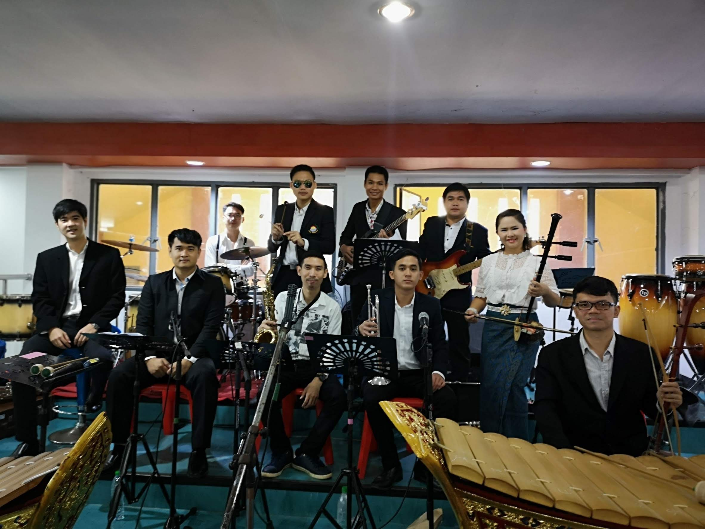

แฟ้มสะสมผลงาน
นายวรุฒ บุญประเสริฐ
หน้าแรก
กิจกรรม
ภาพกิจกรรม
กิจกรรมปีใหม่หมวดศิลปะและต้อนรับครูใหม่
29 ธันวาคม 2561
ครูใหม่แนะนำตัวหน้าเสาธง
8 มกราคม 2561
ร่วมซ้อมวงดนตรีผสมสำหรับงานไหว้ครู ณ โรงเรียนแกลง
14 มกราคม 2562
 แสดงดนตรีวงดนตรีผสมงานไหว้ครู ณ โรงเรียนมุกฎราชวิทยาลัย
16 มกราคม 2562
 กิจกรรมปีใหม่หมวดศิลปะและต้อนรับครูใหม่
กิจกรรมปีใหม่หมวดศิลปะและต้อนรับครูใหม่ ครูใหม่แนะนำตัวหน้าเสาธง
ครูใหม่แนะนำตัวหน้าเสาธง ร่วมซ้อมวงดนตรีผสมสำหรับงานไหว้ครู ณ โรงเรียนแกลง
ร่วมซ้อมวงดนตรีผสมสำหรับงานไหว้ครู ณ โรงเรียนแกลง